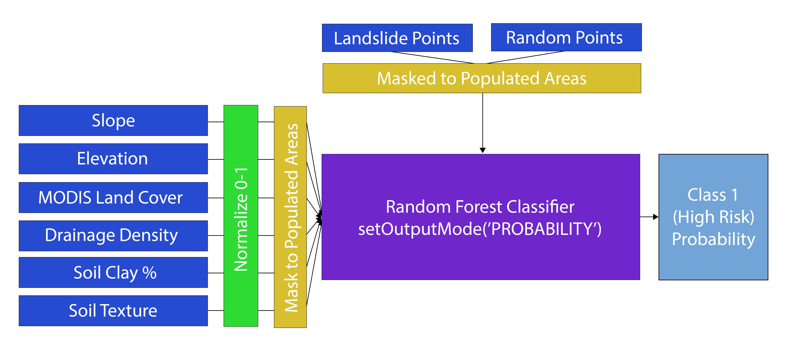
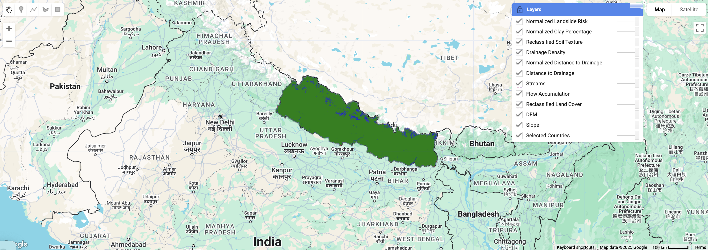

Project Summary
The project aims to develop an application using Google Earth Engine that policymakers can use to assess the landslide susceptibility in Nepal. The model identifies high hazard zones by using parameters like terrain, hydrology, soil, and land cover data. The model follows methodologies from “Use of satellite remote sensing data in the mapping of global landslide susceptibility” by Hong et al (2007). The machine learning model is also tested to validate its accuracy and practicality using the recent landslide points data from the Bipad Portal (Dates: 6-13 April, 2025).

Problem Statement
Almost 80% of the total area of Nepal is prone to landslides (Department of Water Induced Disaster Prevention, 2015), so easily accessible research into which areas are most susceptible is motivated. Updating research to find which factors make areas most vulnerable to damaging landslides in Nepal provides information on the locations of vulnerable populations and critical infrastructure. This research must be easily interpretable for academics and, crucially, local administrators. Our application aims to bridge this disconnect by providing an accessible, Nepali-language platform for policymakers, planners, and stakeholders to visualize high susceptibility zones, and make informed decisions for mitigation and resilience.
End User
Our platform is designed for hybrid users across academia and specific administrative bodies involved in landslide management in Nepal. These users require scientifically robust yet accessible tools to develop policies. In the past, the gap between academic knowledge and local awareness limited the practical benefits of research—as seen during the 2015 earthquake and 2021 Melamchi floods. By delivering these models through a Nepali default website rather than papers, we aim to improve accessibility, utility, and real-world impact for those affected by landslides and responsible for crisis response.
Data
Our data is derived from a variety of public resources, making it possible for future researchers to easily reproduce our work.
| Category | Dataset | Description | Source |
|---|---|---|---|
| GEE | Elevation/Slope | NASA SRTM Digital Elevation 30m | Link |
| Land Cover | MODIS Land Cover Type (2020) | Link | |
| Hydrology | WWF HydroSHEDS flow accumulation | Link | |
| Soil Texture | OpenLandMap Soil Texture Class (USDA System) | Link | |
| Soil Type | OpenLandMap Clay Content | Link | |
| Population Density | Global Human Settlement Layer of spatial distribution of residential population | Link | |
| Other | Historical Landslides | Official reported landslide incident points (2011 - April 2025) | Link |
| Census Population | Official Population per District 2021 Census | Link | |
| Country Boundary | Official boundary layer for Nepal | Link | |
| Districts Boundaries | Official bouundaries of Nepal’s 77 districts | Link |
Methodology
Susceptibility Model
To recreate Hong et al.’s susceptibility model in GEE, we imported six environmental variables into a weighted linear combination. Each variable was normalized on a 0-1 scale, and in combination with the weights provided a susceptibility score for each pixel. Susceptibility was then normalized 0-1 for the whole of Nepal.

Random Forest Model
To find populated areas most susceptible to landslides, we masked our environmental variables to populated areas, and trained a random forest classifier on landslide and randomly generated non-landslide points from Bipad Portal. Each pixel was scored based on the proportion of decision trees voting landslide.

Interface
The website provides an intuitive, bilingual interface combining expertise and data into robust models, offering comparative visualisations and statistical summaries. With Nepali spoken by 78% of the population and English fluency estimated at 20–50%, the platform prioritises clarity through map-based dashboards and toggleable language options to enhance accessibility and local impact.
The Application
The application runs on Google Earth Engine, allowing users to visualise landslide risk across Nepal dynamically. Users can zoom in to specific districts, interpret risk zones, and overlay incident data to validate model predictions. The tool is built for scalability and may be adapted for other regions facing similar geological threats.
TO BE REPLACED:
How it Works
1. Data Preparation and Selection

This model clips Hong et al.’s landslide susceptibility model to Nepal’s boundaries. Greater slope and elevation, as calculated from NASA SRTM Digital Elevation, are associated with higher susceptibility. Looser, coarser soil texture, from OpenLandMap Soil Texture Class, is associated with higher susceptibility. A soil type with more clay, from OpenLandMap Clay Content, is associated with higher susceptibility. Greater drainage density, from WWF HydroSHEDS flow accumulation, is associated with lower susceptibility. Each MODIS land cover type was assigned a susceptibility value by Hong et al.
2. Risk Factor Normalisation and Weighting

Following the methodology from Hong et al. (2007), each input layer is normalised to a 0–1 range to ensure comparability across variables. The normalisation spans values specific to Nepal’s topography and environmental conditions. Slope is weighted at 0.3 as steep terrain has the strongest influence. Soil texture and soil type (clay percentage) are both weighted at 0.2. Drainage density, elevation, and land cover are each weighted at 0.1. These weights were developed by Hong et al. by testing which global weights best aligned with regional susceptibility maps.
3. Integrating Incident Points from Bipad Portal

To validate the model, recent landslide incidents (6–13 April 2025) are scraped from Nepal’s Bipad Portal, which maintains a national disaster event database. Using spatial extraction tools and basic automation, the event point data is converted into a GeoJSON format. This is then uploaded into Google Earth Engine for visual comparison against the model output. These points represent ground-truth observations and are critical for assessing whether high-risk zones in the application align with actual landslide locations. This step bridges remote sensing with on-the-ground incident reporting and provides the foundation for further accuracy testing.
4. Visualising Risk Through the Interface
The application’s output is presented as a single raster layer showing normalised landslide risk. A simple and intuitive interface uses a traffic light colour scheme: green indicates low risk, yellow moderate, and red signifies high-risk areas. This gradient approach makes the output accessible to non-specialists, including government officers and local planners. Users can interactively pan, zoom, and inspect any region of Nepal in real-time via Google Earth Engine. Additional layers, such as slope or soil texture, can be toggled for in-depth analysis. This visual clarity supports both strategic planning and emergency response.
5. Validation, Testing and Potential Expansion
The application’s accuracy will be tested by comparing the predicted high-risk zones against actual landslide points from the Bipad dataset. We will calculate metrics like true positive rate and explore false negatives. If feasible, a Random Forest classifier may be trained using the incident data combined with randomly sampled no-landslide points, incorporating the same environmental variables. This would provide a machine learning-based susceptibility map for comparison with our weighted model. The end goal is to assess both models’ strengths and explore whether hybrid or ensemble techniques could offer improved precision for future applications.